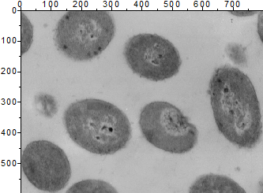
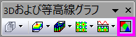

イメージプロット
Image-Plot
- 
必要なデータ
- 行列: 1つの行列のZ値データはラスタ画像から作成されました。オブジェクトが複数含まれるシートもサポートされています。
または、
- イメージ：1つのイメージウィンドウフレームが複数含まれるイメージもサポートされています。すべてのフレームをめくる方法については、以下のこのページを参照してください。
グラフ作成
行列もしくはイメージウィンドウをアクティブにします。
メインメニューから、 を選択します。
または、
「3Dおよび等高線グラフ」ツールバーの「イメージプロット」ボタン をクリックします。
- 
テンプレート
IMAGE.OTP（Originのプログラムフォルダにインストールされています。)
Notes
- デフォルトのXとY軸の範囲は、行列の座標範囲によって決まります。これは、画像のXとYのピクセル範囲と同じです。 メニューは行列のXとYの値を表示します。
- 行列データのイメージプロット（地理データのイメージプロットなど）では、レイヤサイズはXmax-XminとYmax-Yminの比率の関数であり、レイヤの軸の長さをスケールにリンクするオプションはデフォルトで1に設定されています。